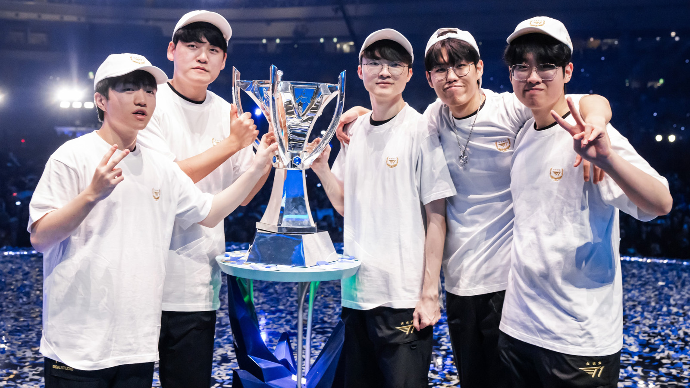
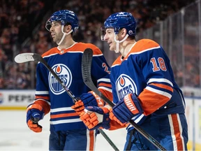

About Me!
Hello! My name is Declan im a computer science student at macewan. For this quick mock up website ill explain a bit about myself as well as go into some of my specific interests. My focus is in game design not just coding but also the more story based elements. Video games have been a big part of my childhood growing up and are a large part of my social life.
Esports
In line with my interest in video games is my keen interest in the world of Esports. While my primary game of choice is League of Legends I do follow alot of different Esports such as Valorant, Overwatch, and some CS. My enjoyment of Esports goes so far that me and a group of friends have watched league world finals live together the last 2 years. This would be a fairly reasonable thing if the game for last years finals didn't start at 1am. Although it was worth it to watch T1 reclaim their crowns! While this Azir play may of been from the semi finals it was my number 1 moment from worlds 2023.
Trading Card Game(s)
Outside of Video games another large part of my social life stems from TCG's. Magic The Gathering litterally got me my first job. Whether im playing Magic or any other TCG im generally doing it with friends. While i used to go to more competative events recently I've stopped as i havnt had the time to grind. While i wasnt able to attend this event one of my friends actually managed to win it!

Traditional Sports
Sports arn't something that I've ever really fallen in love with. While i enjoyed playing Football(Soccer) as a kid that unfortunatly never stuck. Recently however, Ive gotten into watching Hockey with my Friends and Family. Me and a Buddy are even planning to attend a learn to play course in the summer!
